- 01 -
1日ひとりあたりのお米消費量の推移
お米の消費量は、1962年をピークに減少を続けています。
- 1962年度5杯
- 1970年度4杯
- 1980年度3杯
- 2020年度2杯
- 2040年度1杯?
※茶わん1杯分の米＝65gで計算
出典：農林水産省「消費者の部屋」
minori
あしたの食卓へ お米で つながる
IMAGINE
私たちが、ふだん食べている
ほかほかごはん。
それは、
日本のどこかの田んぼで、
だれかの手で育てられている。
そこでは、
田んぼがいろんなものをつなぎ、
豊かな世界が広がっている。
食べる私たちもその一部だから、
お茶わんを片手に加わろう。
みんなにうれしい田んぼを
動画でのぞき見！
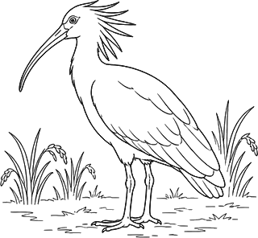
FIND
お米から作られる食品や飲料も、
選べば、田んぼがつなぐ豊かさが
どんどん広がる。
いつものあれ、お米に切り替えよう。
くらしのいろんなシーンで、
取り入れよう。
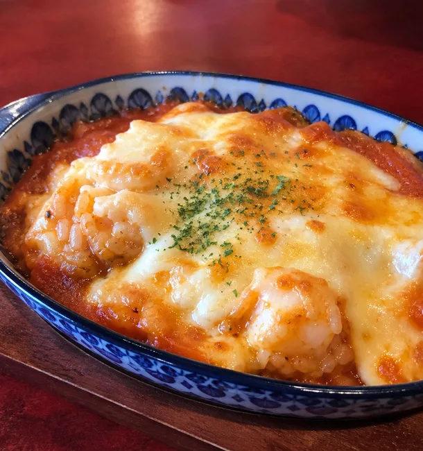
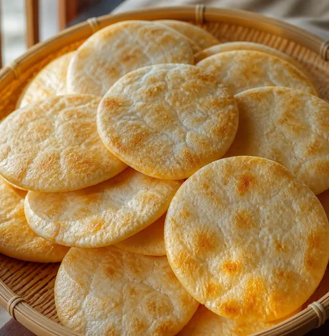
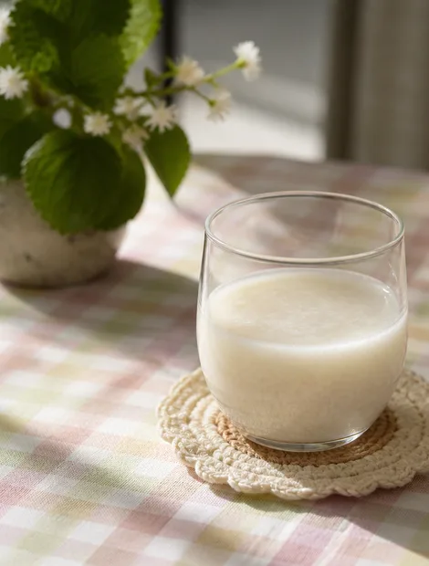
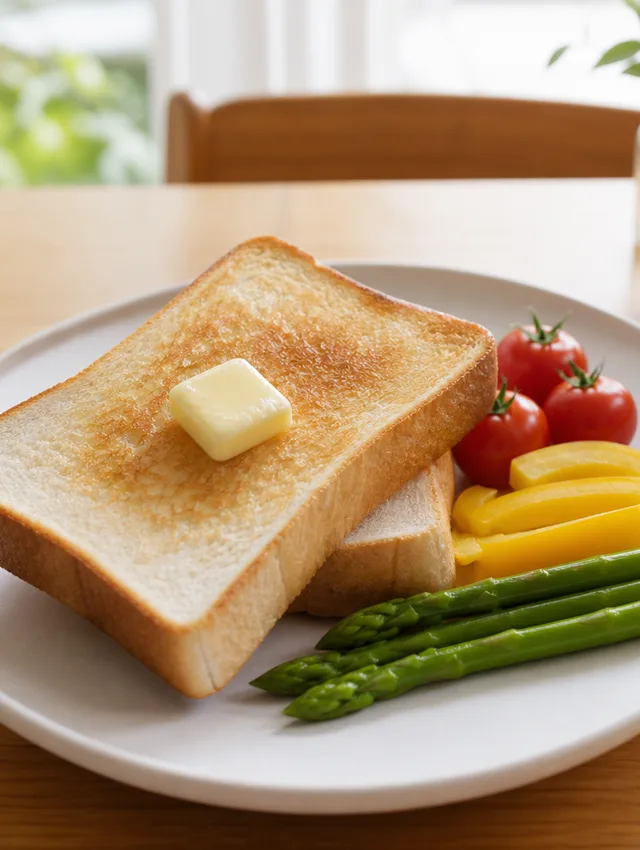
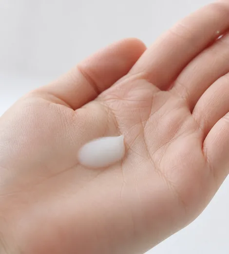
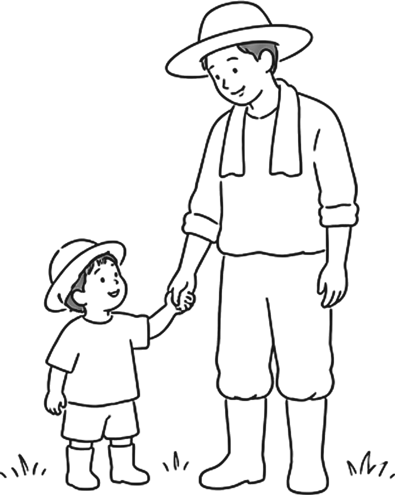
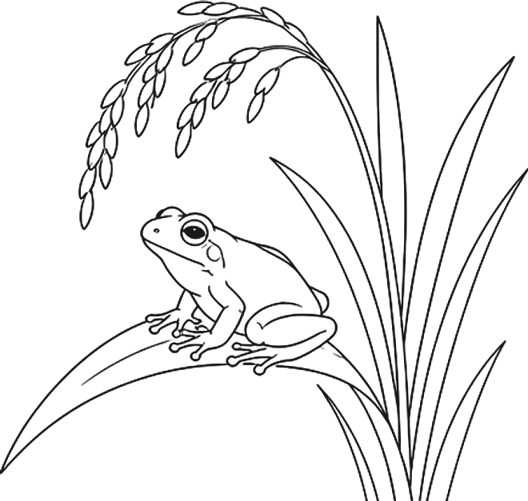
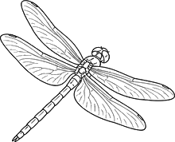
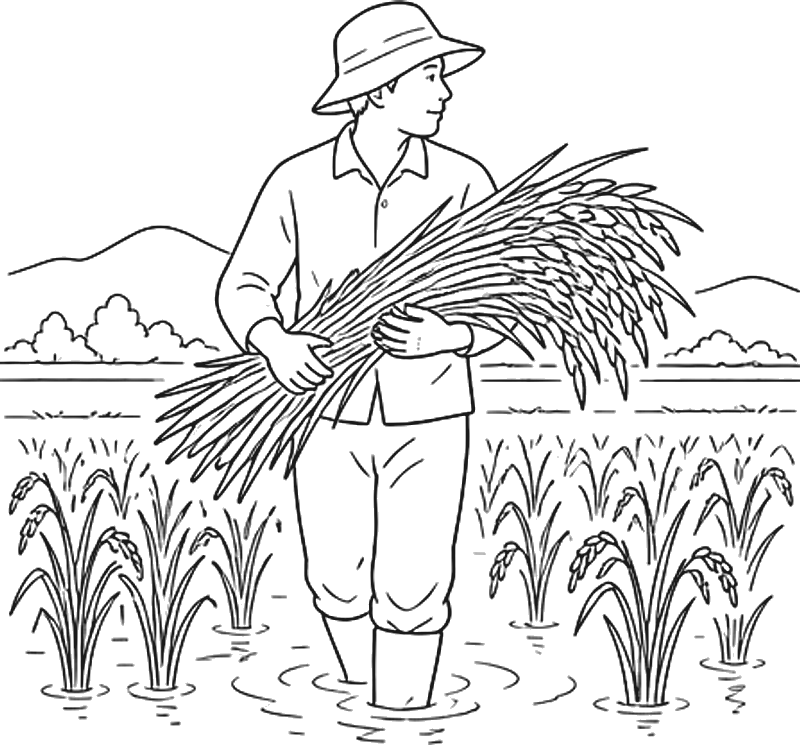
STUDY
お米はほとんどを国内でまかなえている、数少ない主食です。けれど食べる量が減るのに合わせて、田んぼも、作る人も減りつづけています。
- 01 -
お米の消費量は、1962年をピークに減少を続けています。
※茶わん1杯分の米＝65gで計算
出典：農林水産省「消費者の部屋」
- 02 -
生産が需要を超えていましたが、近年、需給はほぼ均衡しています。
※1袋＝100万トンで計算
出典：農林水産省統計
作る量が抑えられ、値も上がらない。そこへ高齢化と後継者不足が重なれば、田んぼは減っていきます。減ったところに天候の不順が来たとき、代わりを外から買えるとはかぎりません。
TRY TODAY
「TRY」ボタンを押して、
あなたの「やってみたい」を教えてください。
お米スイッチ
毎日いただきます
789もう一杯
おかわり
残さず
ごちそうさま
パックごはん
もストック
お米由来の
食品・飲料
お米で育った
畜産物（肉や卵）
お米由来の
スキンケアなど
JOIN US!
さまざまな取り組みを通して、
食卓と産地、人と自然をつないでいきます。
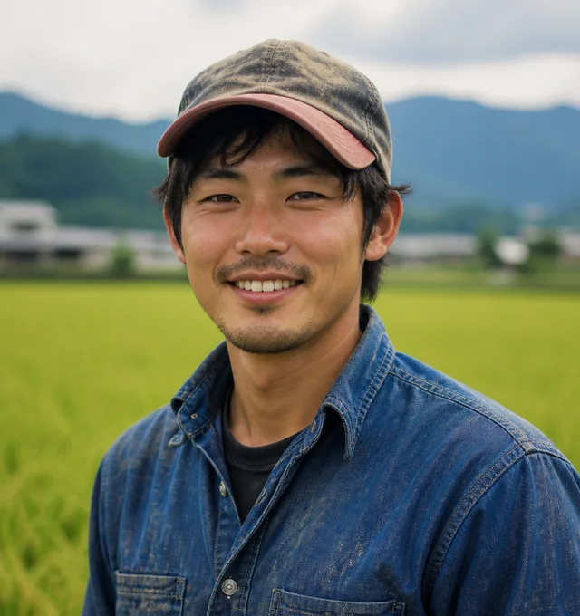
若手、女性生産者にスポットを当てたショートムービー総集編。産直米生産者をぐっと身近に感じられるはず。
たんぼ日記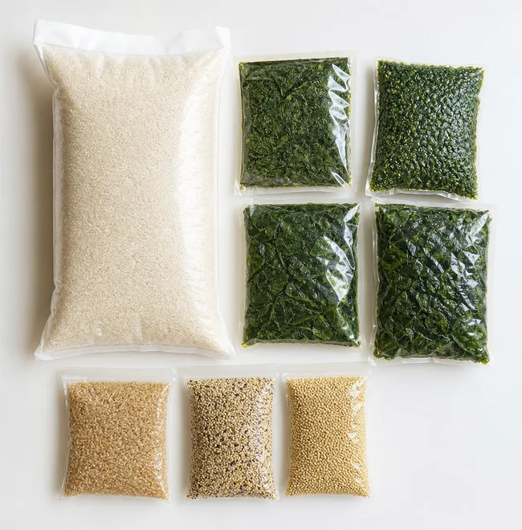
化学合成農薬や化学肥料にできるだけ頼らない。食べることで環境保全にも参加できるお米です。
商品紹介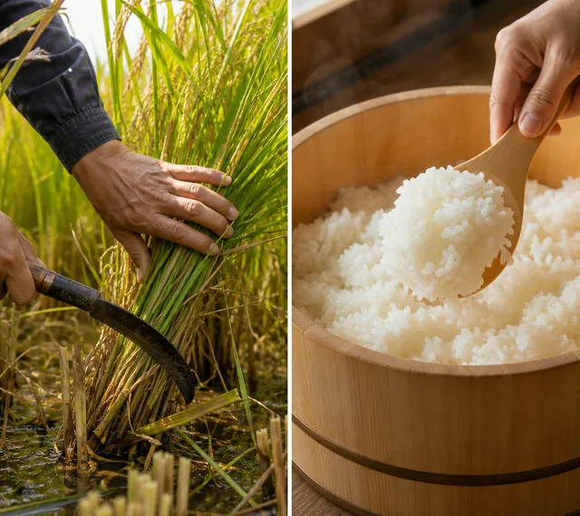
手間がかかる環境保全型の米作り。組合員が年間登録することで、生産者が安心して取り組むことができます。
予約受付中ただいま200件
CHECK
お米でつながるイベントの
レポートを随時公開しています。
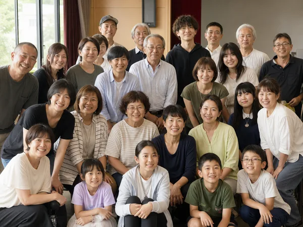
「にぎってつなぐ」参加1万件を達成、産地へ新米1トンを贈呈しました
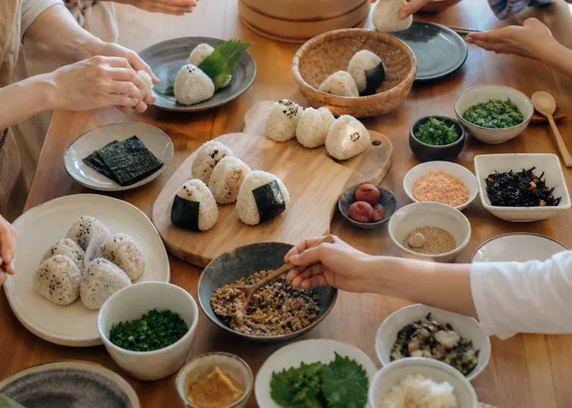
にぎって、食べて。食育イベント「にぎってつなぐ」の参加が1万件を突破
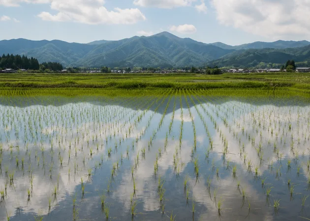
田植え前の年間予約「みのり予約米」2026年産の登録が約20万人に
あしたの食卓へ お米で つながる
炊きたてのごはんは、たくさんの手を通ってきた
おかわりできる うれしさ
作りつづけられる くらし
朝もやの残る 田の水
刈りとったあとの 空の広さ
アメンボもタニシもイトミミズも
ごはんの湯気のむこうには
人と土と生きものがいて
田んぼがそれをつないでいる
この輪のどこかに
いま
お茶わんを持って立とう
来年もまた ここで会おう
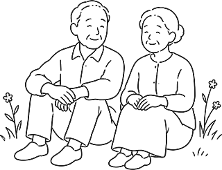
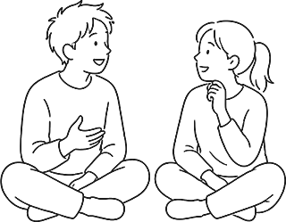
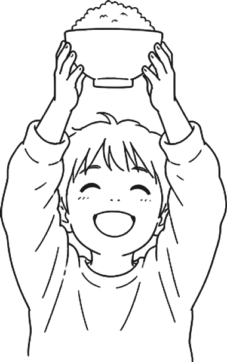
FINAL QUESTION!
今日お米食べたくなった？